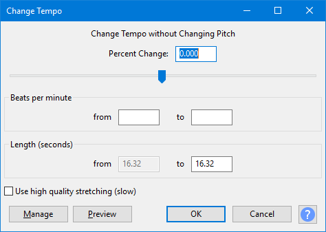

Change Tempo
To change tempo and pitch simultaneously, use .
- Accessed by:
- 
The input boxes are linked. Therefore changing the value in one box will change the values in other boxes as appropriate.
Percent Change
If you know the amount you want to change the tempo of the selection, enter that value in the input box. You can also drag the slider to select a value: the input box will update as you drag the slider.
Beats per minute (BPM)
If you know the BPM of the selection and the BPM you want to change it to, enter those values here. The BPM "to" value will then update the Percent Change and Length "to" values.
Length
If you know what you would like the new length of the selection to be, enter that value in the to input box. The from box shows the current length of the selection and cannot be changed. This is useful if you have a piece of narration that is just a little bit too long or too short to fit where you want it.
Use high quality stretching (slow)
If this checkbox is enabled, the same SBSMS high quality algorithm is used that is used in the Sliding Stretch effect. Change Tempo will process much more slowly if this checkbox is enabled, but will retain the complete content. For small to moderate tempo changes, the resulting quality will usually be higher, especially with percussive music (such as piano music).
Limitations
Change Tempo is a time-stretching effect, because it defies the normal expectation that reducing the speed of the audio (thus increasing its length) will reduce the pitch and vice versa. As with any time-stretching effect, some audible distortions will be expected at more extreme settings.
When using the default (fast) algorithm, Change Tempo may remove some audio from the start or end of the selection, or not stretch the end of the content to the end of the selection when slowing down. Both of these symptoms may leave a short silence at the end of the resultant selection. If the exact length of the audio is important, select the Use high quality stretching (slow) option.
The default (fast) algorithm may sometimes sound echoey, especially when slowing down percussive music. For small to moderate tempo changes, use the "high quality" option to avoid this problem.
The "high quality" algorithm is only suitable for small to moderate tempo changes and the sound quality will deteriorate very badly for extreme changes. For extreme slowing down, consider using the Paulstretch effect.
Buttons
Clicking on the command buttons give the following results:
- gives a dropdown menu enabling you to manage presets for the tool and to see some detail about the tool. For details see Manage presets
- plays a short preview of what the audio would sound like if the effect is applied with the current settings, without making actual changes to the audio. The length of preview is determined by your setting in , the default setting is 6 seconds.
- applies the effect to the selected audio with the current effect settings and closes the dialog
- aborts the effect and leaves the audio unchanged, closing the dialog
 brings you to the appropriate page in the Manual, this page
brings you to the appropriate page in the Manual, this page